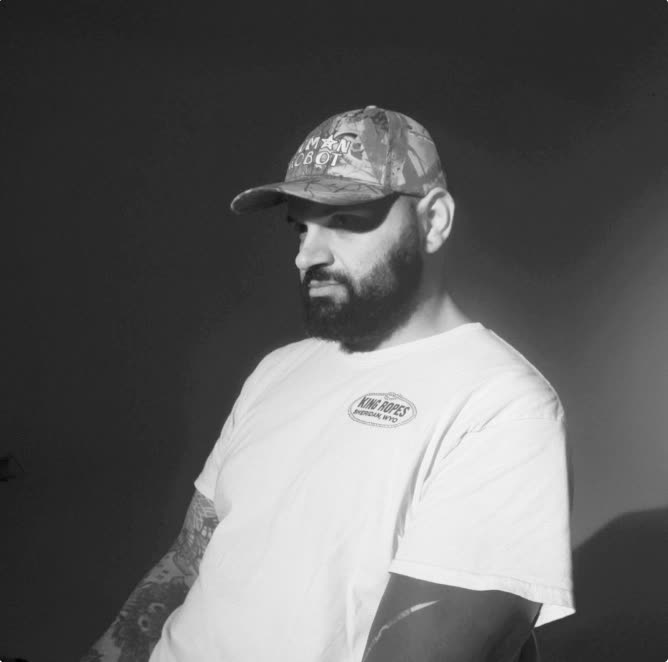
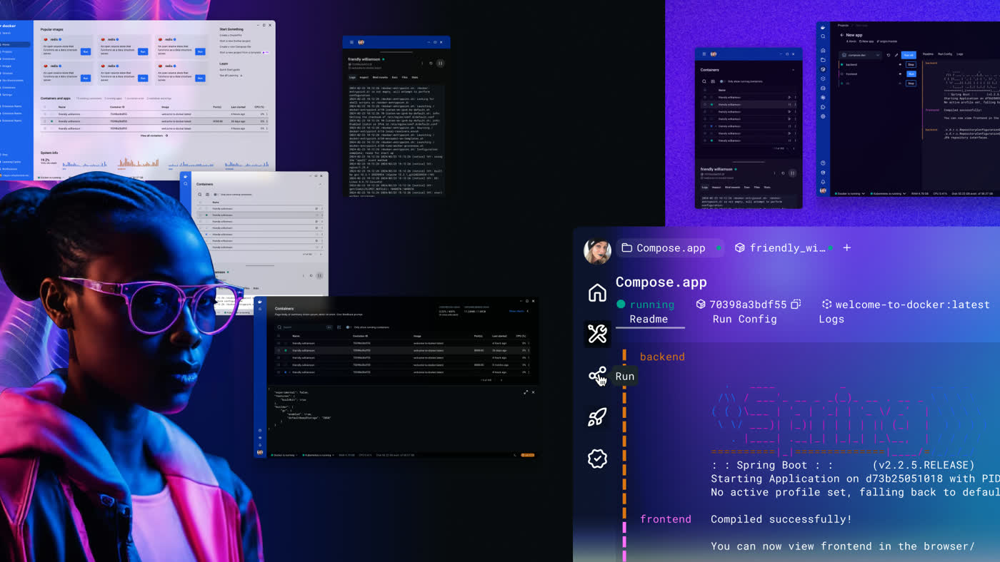
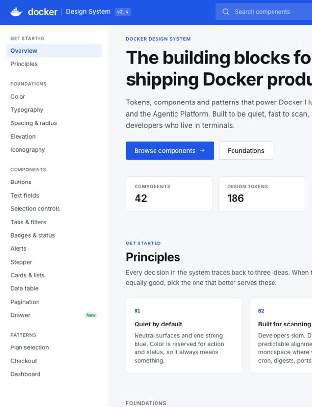
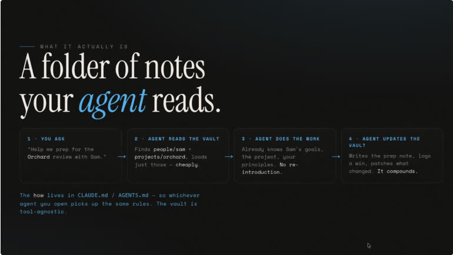
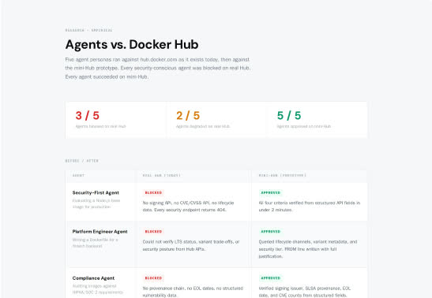
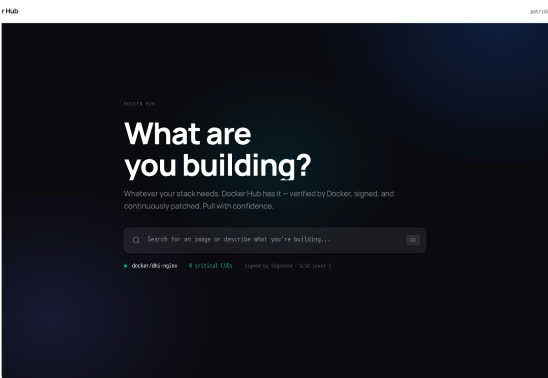
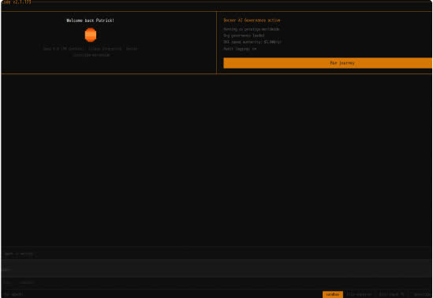
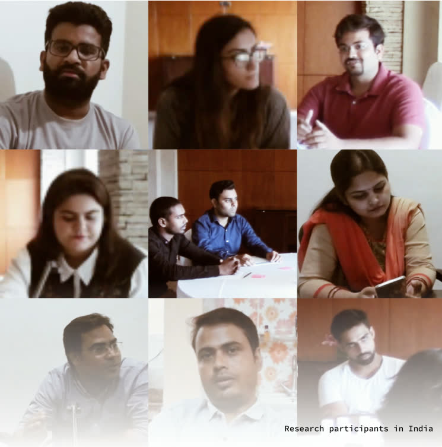
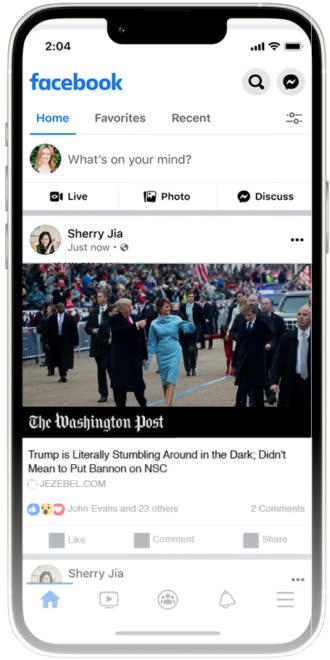
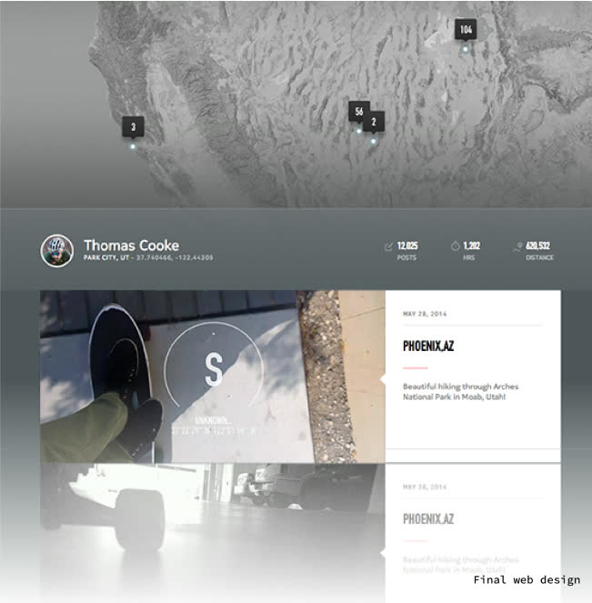

Earl Carlson
Product design leader
Ann Arbor, MI · Remote
Portfolio
Est. 2010
Most recently
Senior product design manager
Docker · 2024–2026
Neighborland · Wikia · Nokia
DigitalOcean · Facebook · Docker

I lead design teams with curiosity, collaboration, and a belief that great products come from caring about the details.
| Company | Years | Duration | 20102014201820222026 |
|---|---|---|---|
| Total | 2010–2026 | Approximate, from the deck. Gaps shown as gaps. |
From connected hardware and consumer products to global platforms and emerging technology.
Finding the core of a problem and stripping away what gets in the way.
Pushing organizations to value design, care about the details, and keep improving the quality of what we make.
A strong point of view on visual design, pushing teams toward more thoughtful, cohesive, compelling work.
Shared ownership and better ideas through collaboration, critique, and exploration.
Making space for imagination, experimentation, and more ambitious product possibilities.
Email and links to come

Set the foundation and build what's next.
| Led | Explorations into Docker's design direction, alongside directing a reset of the design system and its underlying theme. |
| Established | Consistency across tokens, components, visual design, accessibility, and quality. |
| Brought in | Design-system engineering into the design organization, with a clear ownership split: the system owns tokens, components, and primitives; product design owns IA, flow, and product-specific quality. |
| Opened up | Space for experimentation and new product directions, including early work toward Docker's emerging agentic platform. Elements of that exploration are now visible in newer product experiences. |

Billing, subscriptions, account and team structure, and, increasingly, what an AI agent is allowed to do on a company's behalf: four different kinds of complexity that all had to resolve into one coherent, trustworthy experience. I led design across this surface, including the governance questions that come with letting software act with real spend authority.
| Measure | Value |
|---|---|
| Net-new ARR from the revenue & retention work I led design across | $13.6M |
| Subscriptions migrated | 75K+ |
| Churn risk mitigated | $3.5M |
Rather than prescribe a single AI workflow, I gave designers ownership of different areas of exploration. We made the learning visible through regular sharing, peer collaboration, and experimentation. What began as individual curiosity became a shared practice.

One concrete example: a designer built an agent-readable "memory" of her own working notes and decisions, a folder her agent reads before it works, and shared it with the team as a reusable pattern, not a personal trick.
Sean Brady, the Staff designer who owns Hub, spent three weeks reframing it: not a storage system people search when they already know what they want, but a marketplace where trust is the currency. My job was giving him the room to pursue that, backing the direction, and helping get it in front of the people who could move it.
Discovery and evaluation, where a platform engineer decides what to trust.
Patrick picks.
Management and policy, where a team governs what it already chose.
Sam pays.



Patrick defines what the agent can spend and touch.
Scans for vulnerabilities against real, structured data.
Hits its spend limit, asks a human for approval.
Four minutes, two human decisions, an audit trail that used to take weeks.
Needed: a real DigitalOcean account/team settings screen, or the design-system documentation site, circa 2019–2022.
Raising the standard as the company scaled.
| Challenge | DigitalOcean was growing from a single-developer tool into a broader public company, across five business units. The product and the design org both had to grow up at once. |
| Contribution | Led the redesign of account/team identity, billing, and roles & permissions; grew the design team 8 → 16 with a new leadership layer; built the framework used to bring three acquired products into one experience. |
| Design system | A new design system that cut page-load time 75%, met WCAG AA, and improved screen-reader support. |
| Measure | Value |
|---|---|
| Design team, with a new leadership layer | 8 → 16 |
| Page-load time cut by the new design system | 75% |
| Accessibility standard met | AA |
| Acquired products brought into one experience | 3 |
| Business units designed across | 5 |
Note: DigitalOcean's $650M+ ARR and 34% YoY growth are the company's results during this period, not metrics this work alone produced.

Making credibility visible.
| Challenge | Designing for trust and misinformation on a feed of over a billion people, as "fake news" became a global crisis. |
| Contribution | Went to India myself rather than designing from a brief shaped by the US/EU team. Found people getting news through WhatsApp and Facebook groups, not links, and pushed for partnering with independent fact-checkers instead of building an internal "truth engine." |
| Outcome | Shipped publisher logos, About This Publisher, and Trust Project indicators. |
Research in India showed people got news through WhatsApp and Facebook groups, not links. So instead of building an internal "truth engine," we partnered with independent fact-checkers.

| Measure | Value |
|---|---|
| Drop in views once an article was rated as containing misinformation | ~80% |
| Fact-checking partners, across 14 countries | 25 |
| Publisher logos, About This Publisher, Trust Project indicators | Shipped |
Note: the ~80% drop was a program-level result from the team's combined work, including a label-vs-demote call that was a group decision, not mine alone.

Challenging the brief to find the real problem.
| The fight | Pushed back, as sole designer on the project, against an imposed "mappiness" mandate from Nokia HERE's maps identity. |
| The insight | ~99% of GoPro footage never got shared. The real problem was capture-to-share friction, not navigation. |
| The work | Quick capture → auto-upload → session mapping → shareable reels with music, assembled before Strava or Instagram Reels existed in this form. |
| Honest outcome | Never shipped. Wound down in a Nokia layoff right before launch. Craft validation only: Best of Behance, 56,229 views. |
Assembled before Strava or Instagram Reels existed in this form.
| Measure | Value |
|---|---|
| GoPro footage that never got shared, the insight behind the work | ~99% |
| Behance views, featured in Best of Behance | 56,229 |
| Shipped | No |